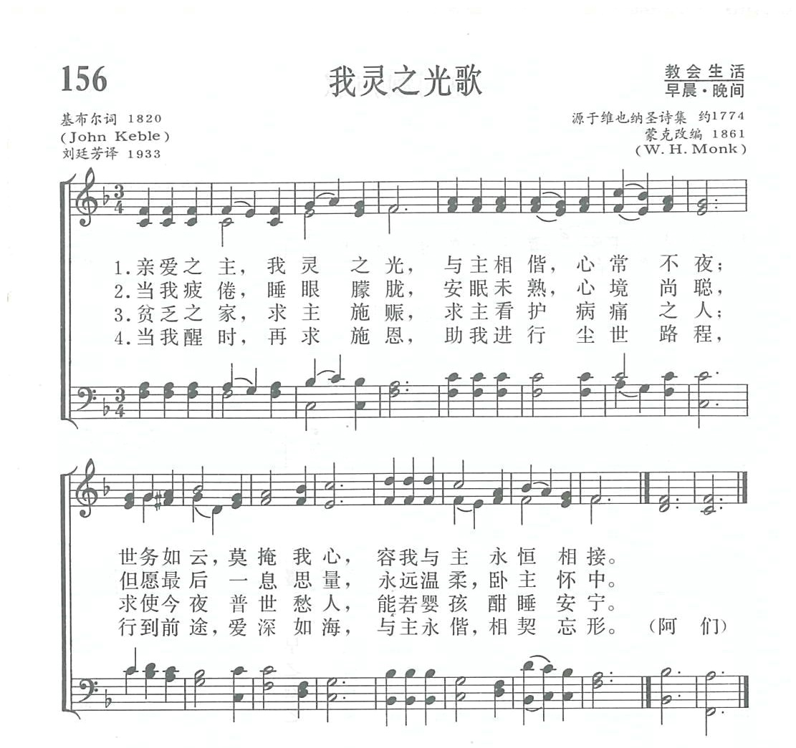
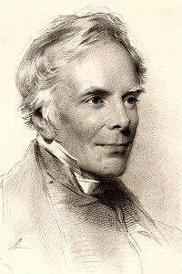
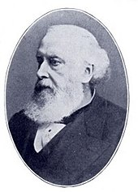

1735 Sun of My Soul, Thou Saviour Dear _John
Keble
我靈之光
▲
Sun of my soul, Thou Savior dear,
Author: John Keble (1820)
Tune: HURSLEY |
|
|
1 Sun of my soul, Thou Savior dear,
it is not night if Thou be near;
O, may no earthborn cloud arise,
to hide Thee from Thy servant's eyes.
2 When the soft dews of kindly sleep
my weary eyelids gently steep,
be my last thought-- how sweet to rest
forever on my Savior's breast!
3 Abide with me from morn till eve,
for without Thee I cannot live;
abide with me when night is nigh,
for without Thee I dare not die.
4 Be near to bless me when I wake
ere through the world our way I take;
abide with me till in Thy love
I lose myself in heav'n above.
|
親愛救主，我靈之光，有主在旁，黑夜亦亮；
莫容世務如雲遮掩，使我時刻能見主面。
從朝到暮求主同住，若沒有主，便無生趣；
求主夜間也常在此，若沒有主，我必畏死。
由主豐盛恩典之庫，救助貧窮，安慰孤獨；
更求撫慰憂悶之人，如同嬰孩酣睡安穩。
清早醒來求主賜福，助我在世力行正路；
求主領我直到天庭，在主愛中永享安寧。阿們。 |

https://blog.xuite.net/weikuo.mr/tahymns/46737893

|
| |
|
Music: Hursley Katholisches
Gesangbuch (Vienna:
1774).
Adapted from the Metrical
Psalter, 1855 (🔊  ).
).
http://www.hymncompanions.org/Dec/13/stream.php
http://www.hymncompanions.org/Dec/13/stream.php
親愛救主，我靈之光，有主在旁，黑夜亦亮；
莫容世務如雲遮掩，使我時刻能見主面。
從朝到暮求主同住，若沒有主，便無生趣；
求主夜間也常在此，若沒有主，我必畏死。
由主豐盛恩典之庫，救助貧窮，安慰孤獨；
更求撫慰憂悶之人，如同嬰孩酣睡安穩。
清早醒來救主賜福，助我在世力行正路；
求主領我直到天庭，在主愛中永享安寧。
 (請點耳機收聽)
(請點耳機收聽)
本詩的作者祁柏（John Keble, 1792-1866）是英國人，他生性謹慎沉靜，為人真誠謙和。 他父親是聖公會的牧師，學識淵博。

祁柏童年時，由他父親自授課。他聰穎過人，十四歲時，獲牛津學院獎學金，廿一歲獲碩士學位，廿三歲被按立為牧師。
祁柏關愛家人，他在母親去世後，辭去高薪要職，在一個僅1500居民的貧窮小村Hursley牧會三十年，以便就近照顧他的父親和兩個姊姊。
1831年，他被牛津大學選任詩學教授有十年之久，該職祇需每學期用拉丁文演講一次，故他仍可居留家鄉。
1833—1845年間，英國聖公會中，有一些人士反對教會內有自由主義的傾向，發起「牛津運動」，主張恢復教會的傳統與尊重禮儀。
因領導該運動的人士都與牛津有關，故此名之。 祁柏也是發起人之一，他以一篇「國家叛教」為題的講道，開始了此運動，祇是以後他沒有隨同他人退出聖公會而加入天主教。
祁柏總共寫了七百多首詩，本詩歌是摘自他在1820年所作的長詩「夜晚」（Evening），原詩有十四節。 他根據路加福音24:29
，在以馬忤斯的途中，兩位門徒在夕陽西沉時，求主留下與他們同住的情景，寫成的一首詩歌。
1827年，他將歷年所寫的聖詩集成一冊，定名為「基督徒之年」（The Christian Year）。
他按基督教年曆編排，每一節日都有一首詩歌，本詩歌首次在該詩集中發表，
這詩集出版後，轟動一時，五年內多次再版；在他有生之年，一共再版了105次，銷售達三十萬冊，是宗教詩歌中最暢銷的詩本。祁柏將版權所得，悉數充作小村建堂之用，仍綽綽有餘，成為Hursley教會之特別基金。
1869年，牛津大學在祁柏為Poor Man's College 所置的土地上，創辦了一所「祁柏學院」，以資紀念。
在一個暴風雨的深夜，有一艘滿載旅客的輪船在大海中飄蕩，他們發出緊急求援的信號。 岸上的救難者因天黑伸手不見五指，找不到船在那�堙A後來聽到船上有一女聲在唱「親愛救主，我靈之光」。
他們順著歌聲的方向，找到了船，拯救了全船旅客。
中英文聖詩集參考
英文歌名 Sun
of My Soul, Thou Saviour Dear
頌主新歌 14
頌主新歌(中英雙語) 13
生命聖詩 498
新聖詩 109
歡欣讚美 625
聖徒詩集 591
聖詩 233
台語聖詩 370
恩頌聖歌 398
頌主聖詩 240
讚美詩(新編) 156
校園詩歌II 48
http://cb.immanuel.net/cb/hymn/Hymn.asp?HymnID=34
|
我靈之光
John Keble |
Sun of My Soul! Thou
Saviour Dear |
約翰 |
John Keble |
親愛救主，我靈之光，
有主在旁，黑夜亦亮；
莫容世務如雲遮掩，
使我時刻能見主面。 |
Sun of my soul, Thou Saviour dear,
It is not night if Thou be near;
O may no earthborn cloud arise,
To hide Thee from Thy servant's eyes. |
|
作者約翰(John
Keble,1792-1866),於1792年4月15日生於英國的費阿佛德,他的父親曾是學問淵博的牛津大學教授,後來擔任鄉下教會的牧師;然而約翰受到他父親的影響與教導,未上過正式學校而年僅十四歲便考取牛津大學,十八歲得到學位,更不可思議的是他在校期間除了才華洋溢外,功課也都是名列前茅,文理兩科甚至還獲該校最高榮譽獎(此榮譽自牛津大學以來只有兩人得過,另一位是英國政治家皮爾),畢業後他於二十四歲時被按立為牧師,也曾回到母校擔任助理教授數年,後來因為母親過世而辭去教職,返鄉奉養父親,1826年擔任父親的副牧師,並協助父親牧養教會。
值得一提的是,他也曾是著名"牛津運動"發起人之一,只是後來他沒有退出聖公會加入天主教。
1827年,約翰將自己過去所寫的聖詩集成一卷,而將書名定為"聖徒之年(The Christian
Year)",其特色是按著基督教曆編排,每個紀念日都有一首代表性詩歌,沒想到出版後,竟然造成很大的轟動,光是五年之內竟一再重版,而將版稅的收入全數捐為建堂裝修使用,卻仍然有餘。甚至在約翰有生之年,先後總共再版竟高達九十六次,並且總發行數達十五萬卷之多。有人譽稱該詩歌集,可與當時聖公會的"公禱書(The
Book of Common Prayer)"同垂不朽,可見這本聖詩集之份量,對當時具有極大的影響力了!
然而在該詩歌集中,最受歡迎的有兩首,一首是"每日新恩歌(New Every Morning)";
而另一首,就是本文所介紹的這首"我靈之光",這也是在生命聖詩中,唯一有編入的一首他的作品。
(資料整理:葉俊明) |
| ©1997-2021 Immanuel.Net,
All Rights Reserved. |
https://www.christianmusicandhymns.com/2015/03/sun-of-my-soul-thou-saviour-dear-john.html
ONE of the literary landmarks of the early nineteenth century, in sacred
poetry at least, was The Christian Year, the work of the Rev.
John Keble. A high churchman of the Church of England, he was one of the
founders of the Tractarian Movement, which aimed at producing a higher
spiritual condition within the church. At one time he was professor of
poetry in Oxford University.
In "Famous Hymns of the World," Allan Sutherland tells this story of Keble's
hymn: "In a wild night a gallant ship went to her doom. A few women and
children were placed in a boat, without oars or sails, and drifted away at
the mercy of the waves. Earlier in the evening, before the darkness had
quite settled down, brave men on the shore had seen the peril of the vessel
and had put out in
the face of the tempest, hoping to save human life, but even the ship could
not be found. After fruitless search, they were about returning to the
shore, when out on the water, and above the wail of the storm, they heard a
woman's clear voice singing:
Sun of my soul, Thou Saviour dear,
It is not night, if Thou be near.
The work of rescue was quickly accomplished. But for the singing, in all
probability, this boatload of lives would have drifted beyond human help or
been dashed to pieces before morning."
https://wordwisehymns.com/2014/08/22/sun-of-my-soul/
Words: John Keble (b. Apr. 25, 1792; d. Mar. 29, 1866)
Music: Hursley, by an unknown composer.
Links:
Wordwise Hymns
The Cyber Hymnal
Hymnary.org
Note: John Keble was elected to the Poetry Professorship at Oxford University,
in 1831. His skill as a poet can be seen in this beautiful hymn, written in
1820. It is part of a fourteen stanza poem entitled “Evening.” And while the
hymn is wonderful as it is, it gains some force by noting the initial stanza of
the poem which speaks of the actual sun in the sky.
‘Tis gone! That bright and orbéd blaze
Fast fading from our wistful gaze;
Yon mantling cloud has hid from sight
The last faint pulse of quivering light!
Keble’s point is that the physical sun may pass from view, and night descend,
but Christ the “Sun of my soul” gives eternal light.
Various compilations of hymns list this one among the top ten in the English
language. And the very useful Hymnary.org tells us they found it in 1,184 hymn
books. That surely attests to its popularity over the years.
Graphic Hursely ChurchAs to the tune, John Keble and his wife selected it for
this hymn, and named it Hursley, as that was the parish in England where Keble
was vicar for thirty years. (The church is pictured.) The tune was found in the
Katholisches Gesangbuch (German Catholic Songbook), where it was the setting for
the German Te Deum.
The Cyber Hymnal includes some interesting comments by composer Herbert Oakeley,
who considered this tune inadequate and vulgar. (His words.) He calls it “a
lively tune, unsuitable to sacred words, [which] often had the effect of driving
me out of church.” Really? The tune can hardly be called “lively,” unless it is
sung rapidly–which would be totally unsuited to the words.
Further, it is a beautifully crafted melody. Notice how the rising pitch of the
second line perfectly suits the urgency of the words in the last couplet of each
stanza. Oakeley’s own tune for the hymn (Abends) is fine, but it lacks that
dramatic structure. For me, it’s not an improvement.
The hymn was inspired by Luke 24:29. Reference to this incident on the road to
Emmaus, and the request that the Lord “abide” with us, is found in CH-3
“They constrained Him [Christ], saying, ‘Abide with us, for it is toward
evening, and the day is far spent.’ And He went in to stay with them” (Lk.
24:29).
However, poetic imagery of Christ as the sun comes from the prophet Malachi, who
prophesies of the coming Messiah:
“The Sun of Righteousness shall arise With healing in His wings” (Mal. 4:2).
CH-1) Sun of my soul, Thou Saviour dear,
It is not night if Thou be near;
O may no earthborn cloud arise
To hide Thee from Thy servant’s eyes.
CH-2) When the soft dews of kindly sleep
My wearied eyelids gently steep,
Be my last thought, how sweet to rest
Forever on my Saviour’s breast.
There is a marvelous, and thoroughly biblical, contrast in CH-3. “Without Thee I
cannot live…without Thee I dare not die.” It reminds me of Paul’s declaration,
“To me, to live is Christ, and to die is gain” (Phil. 1:21). Without Christ,
life on a spiritually and eternally rewarding plain is impossible, and death is
a fearsome prospect. But if to live is Christ, then to die can only be gain.
CH-3) Abide with me from morn till eve,
For without Thee I cannot live;
Abide with me when night is nigh,
For without Thee I dare not die.
After pleading the necessity of the presence of the Lord in his own life, the
author turns his attention, in prayer, to others. There is a prayer for
backslidden believers (CH-4), and for those who are sick, or in mourning (CH-5).
The hymn moves to a glorious conclusion with CH-6, when the believer in eternity
is lost–in the positive sense of being submerged in and surrounded by the ocean
of God’s love.
CH-6) Come near and bless us when we wake,
Ere through the world our way we take,
Till in the ocean of Thy love
We lose ourselves in heaven above.
Questions:
1) What is it about the physical sun and sunlight that provides a picture of
what Christ means to us?
2) One commentator wrote, “Sun of My Soul is one of the finest examples in our
language of what a true prayer hymn should be.” Do you agree, or disagree? (And
why?)
https://zh.wikipedia.org/wiki/%E8%81%96%E5%85%AC%E5%AE%97%E8%81%96%E8%A9%A9
維基百科，自由的百科全書
普世聖公宗創作或常用的聖詩
19世紀四大傑作[編輯]
聖公會聖詩四大傑作 是19世紀流傳在聖公會詩歌本的四首聖詩。
英國聖公會金雅各牧師（Rev. James King），在他1885年出版的 'Anglican Hymnology'[1]書中，統計當時所搜集全球聖公會52種詩歌本，其中51個詩歌本共同收錄了四首聖詩。布瑞德牧師(Rev
David Breed)在其出版的'The History And Use Hymns And Hymn-Tunes'[2]書中，依據金雅各牧師的統計，稱他們為聖詩四大傑作。
聖詩四大傑作：
1. 今夜將榮耀獻給主 All Praise to thee, my
God, this night[3], Thomas
Ken
2. 聽啊!天使高聲唱 Hark!
The Herald Angels Sing|Hark! The Herald Angels Sing, 查理·衛斯理
3. 看哪 救主駕雲降臨 Lo!
He comes with clouds descending, 查理·衛斯理
4. 萬古磐石,或永久磐石 Rock
of Ages, Augustus
Toplady
其他通用聖詩[編輯]
其他49個詩歌本共同收錄的聖詩有:
5. 與我同住，或求主同住 Abide
with Me, Henry
Lyte.
6. 我靈速醒，或求主今天引導管理 Awake my soul and with the sun[4], Thomas
Ken
7. 榮美聖城 Jerusalem the golden[5],
Bernard of Morlaix, John
M. Neale由拉丁文翻譯為英文
8. 耶穌 靈魂的愛人 Jesus, Lover of my soul, 查理·衛斯理
9. 救主耶穌我的太陽 Sun of my soul, thou Saviour dear[6], John
Keble
10. 我每靜念那十字架 When
I Survey the Wondrous Cross, 以撒華滋.
參考文獻[編輯]
-
^ Anglican
hymnology : being an account of the 325 standard hymns of
the highest merit according to the verdict of the whole
Anglican Church (1885)
-
^ The
History And Use Hymns And Hymn-Tunes, by Rev David Breed,
Fleming H. Revell Company, 1934, p85
-
^ All
Praise to thee, my God, this night. Cyberhymnal. （原始內容存檔於2010-12-20）.
-
^ AWAKE,
MY SOUL, AND WITH THE SUN. Cyberhymnal. （原始內容存檔於2011-07-03）.
-
^ JERUSALEM
THE GOLDEN. Cyberhymnal. （原始內容存檔於2012-09-17）.
-
^ Sun
of my soul, thou Savior dear. Oremus Hymnal. （原始內容存檔於2009-06-06）.
chrome-extension://efaidnbmnnnibpcajpcglclefindmkaj/viewer.html?pdfurl=https%3A%2F%2Fir.taitheo.org.tw%2Fbitstream%2F987654321%2F6247%2F14%2FTh.M%2B2016-7.pdf&clen=3253241
「牛津運動」思潮下凱布爾的 聖禮講道之研究
................................................................................................
錄 第一章：緒論1 第一節
研究動機及目的………………………………………………………1 第二節 研究的文獻綜覽 ……………………………………………………10
一、第一手資料 …………………………………………………………10 二、第二手資料
…………………………………………………………13 第三節 研究方法 ……………………………………………………………18
一、講道歷史人物研究法 ………………………………………………18 二、當代講道學方法論
…………………………………………………20 第四節 各章節介紹 …………………………………………………………31
第二章：凱布爾與「牛津運動」……………………………………33 第一節 「牛津運動」開端主因
……………………………………………33 一、十九世紀各思潮衝擊 ………………………………………………33 二、國教會權威受到挑戰
………………………………………………36 三、敬拜禮儀及靈性衰落 ………………………………………………37 第二節
「牛津運動」重要思想 ……………………………………………39 一、推崇遵行中庸之道 …………………………………………………39
二、回歸大公教會傳統 …………………………………………………41 三、重整踐行聖事禮儀
…………………………………………………42 第三節 凱布爾生平與講道塑造…………………………………………… 44
一、凱布爾的生平簡介 ……………………………………………… 44 二、凱布爾的講道塑造 ………………………………………………
50 vi 第三章：凱布爾的聖禮講道之洗禮篇…………………………… 55 第一節 十九世紀上半期英國國教會洗禮教義的教導與爭論
……………55 一、「牛津運動」思潮下關於洗禮的教導與爭論………………………55 二、1847年高漢牧師（Rev. G. C.
Gorham case）事件 …………………60 第二節 以當代講道學四面向分析凱布爾有關洗禮的講道篇 ……………63 第三節
探究凱布爾在「牛津運動」思潮下宣講洗禮講道之意涵 …………95 第四章：凱布爾的聖禮講道之聖餐篇 ………………………… 101
第一節 十九世紀上半期英國國教會聖餐教義的教導與爭論……………101
一、「牛津運動」思潮下關於聖餐的教導與爭論……………………101
二、1853年英國丹尼森（Denison）會吏長審訊和1857年蘇格蘭 傅斯比（Forbes）主教事件
………………………………………106 第二節 以當代講道學四面向分析凱布爾有關聖餐的講道篇……………109 第三節
探究凱布爾在「牛津運動」思潮下宣講聖餐講道之意涵………129 第五章：結論 ………………………………………………………135
一、研究成果……………………………………………………………136
二、凱布爾聖禮講道對現代教會與講道者的反思……………………141
三、本研究的限制與未來展望…………………………………………147 附錄 …………………………………………………………………150
附錄一、凱布爾洗禮和聖餐講道之日期與經文排列 ……………… 150 附錄二、凱布爾具代表性的講章「舉國叛教」以及洗禮和聖餐
講章各一篇 ………………………………………………… 153 參考書目 ……………………………………………………………177
vii 目錄 第一章：緒論1 第一節 研究動機及目的…………………………………………………………………………1 第二節
研究的文獻綜覽……………………………………………………………………… 10
一、第一手資料…………………………………………………………………………………… 10
二、第二手資料…………………………………………………………………………………… 13 第三節
研究方法…………………………………………………………………………………18
一、講道歷史人物研究法………………………………………………………………………18
二、當代講道學方法論………………………………………………………………………… 20 第四節
各章節介紹…………………………………………………………………………… 31
第二章：凱布爾與「牛津運動」……………………………………………33 第一節
「牛津運動」開端主因……………………………………………………………33
一、十九世紀各思潮衝擊………………………………………………………………………33
二、國教會權威受到挑戰………………………………………………………………………36
三、敬拜禮儀及靈性衰落………………………………………………………………………37 第二節
「牛津運動」重要思想……………………………………………………………39 一、推崇遵行中庸之道
…………………………………………………………………………39 二、回歸大公教會傳統
…………………………………………………………………………41 三、重整踐行聖事禮儀
…………………………………………………………………………42 第三節
凱布爾生平與講道塑造……………………………………………………………44 一、凱布爾的生平簡介
…………………………………………………………………………44 二、凱布爾的講道塑造
…………………………………………………………………………50 第三章：凱布爾的聖禮講道之洗禮篇…………………………………… 55
第一節 十九世紀上半期英國國教會洗禮教義的教導與爭論 …………………55 一、「牛津運動」思潮下關於洗禮的教導與爭論
…………………………………55 二、1847年高漢牧師（Rev. G. C. Gorham case）事件
……………………………60 第二節 以當代講道學四面向分析凱布爾有關洗禮的講道篇 ………………63 第三節
探究凱布爾在「牛津運動」思潮下宣講洗禮講道之意涵 …………95 第四章：凱布爾的聖禮講道之聖餐篇…………………………………
101 第一節 十九世紀上半期英國國教會聖餐教義的教導與爭論 ……………… 101
一、「牛津運動」思潮下關於聖餐的教導與爭論…………………………………101
二、1853年英國丹尼森（Denison）會吏長審訊和1857年蘇格蘭
傅斯比（Forbes）主教事件……………………………………………………………106 第二節
以當代講道學四面向分析凱布爾有關聖餐的講道篇 ………………109 第三節 探究凱布爾在「牛津運動」思潮下宣講聖餐講道之意涵
………129 第五章：結論……………………………………………………………………… 135 一、研究成果
…………………………………………………………………………………… 136 二、凱布爾聖禮講道對現代教會與講道者的反思
……………………………… 141 三、本研究的限制與未來展望…………………………………………………………… 147
附錄………………………………………………………………………………………150
附錄一、凱布爾洗禮和聖餐講道之日期與經文排列…………………………… 150
附錄二、凱布爾具代表性的講章「舉國叛教」以及洗禮和聖餐 講章各一篇 …………………………………………………………………………
153 參考書目………………………………………………………………………………177
http://www.hymntime.com/tch/bio/k/e/b/l/keble_j.htm
Biography
Keble was the son of the vicar of Colne.

After a brilliant career at Oxford University, he took Holy Orders and
became curate at East Leach and Burthorpe.
In 1831, Keble became a professor of poetry at Oxford. In 1833, he laid
the foundation of the Oxford Movement by delivering his famous Assize
Sermon. In 1835, he accepted the vicarage at Hursley, where he stayed the
rest of his life.
Keble was a modest man, and probably thought less of his own work than did
the least of his admirers. He once accompanied the vicar of a parish in
southern England on his visit to the Sunday School.
The superintendent asked Keble to say a few words to the children, who were
already acquainted with his hymns, so that they might more easily
remember them. Keble demurred, but when the superintendent persisted,
said May they sing something? When they finished, his face was beaming as he
said:
My dear children, you sang most beautifully in tune; may your whole lives be
equally in tune, and then you will sing with the angels in heaven.
Publications
The Christian Year: Thoughts in Verse for the Sundays and Holy Days
Throughout the Year, 1827
https://en.wikipedia.org/wiki/John_Keble
From Wikipedia, the free encyclopedia
Jump to navigationJump
to search
John Keble (;
25 April 1792 – 29 March 1866) was an English churchman and poet,
one of the leaders of the Oxford
Movement. Keble
College, Oxford, was named after him.[1]
Early life[edit]
Keble was born on 25 April 1792 in Fairford,
Gloucestershire, where his father, also named John Keble, was vicar of Coln
St. Aldwyns. He and his brother Thomas were educated at home by
their father until each went to Oxford. In 1806, Keble won a
scholarship to Corpus
Christi College, Oxford. He excelled in his studies and in 1810
achieved a double first class in both Latin and mathematics. In
1811, he won the university prizes for both the English and Latin
essays and became a fellow of Oriel
College. He was for some years a tutor and examiner at the University
of Oxford.[2]
While still at Oxford, he was ordained in
1816,[3] becoming
a curate to his father and then curate of St
Michael and St Martin's Church, Eastleach Martin, in
Gloucestershire while still residing at Oxford. On the death of his
mother in 1823, he left Oxford and returned to live with his father
and two surviving sisters at Fairford.
Between 1824 and 1835, he was three
times offered a position and each time declined on the grounds that
he ought not separate himself from his father and only surviving
sister. In 1828, he was nominated as provost of
Oriel College but not elected.[2][4]
The Christian
Year[edit]
Meantime, he had been writing The
Christian Year, a book of poems for the Sundays and feast
days of the church year. It appeared in 1827 and was very effective
in spreading Keble's devotional and theological views. It was
intended as an aid to meditation and devotion following the services
of the Prayer Book.[5] Though
at first anonymous, its authorship soon became known, with Keble in
1831 appointed to the Chair
of Poetry at Oxford, which he held until 1841. Victorian scholar
Michael Wheeler calls The Christian Year simply "the most
popular volume of verse in the nineteenth century".[6] In
his essay on Tractarian Aesthetics and the Romantic Tradition,
Gregory Goodwin claims that The Christian Year is "Keble's
greatest contribution to the Oxford Movement and to English
literature." As evidence, Goodwin cites E.
B. Pusey's report that 95 editions of this devotional text were
printed during Keble's lifetime, and "at the end of the year
following his death, the number had arisen to a hundred-and-nine".
By the time that the copyright expired
in 1873, over 375,000 copies had been sold in Britain and 158
editions had been published. Despite its widespread appeal among the
Victorian readers, the popularity of Keble's The Christian Year faded
in the 20th century despite the familiarity of certain well-known
hymns.
At Oxford, Keble met John Coleridge
who introduced him to the writings not only of his uncle, Samuel
Taylor Coleridge, but also of Wordsworth. He dedicated his Praelectiones to
and greatly admired Wordsworth, who once offered to go over The
Christian Year with a view to correcting the English.[7] To
the same college friend, he was indebted for an introduction to Robert
Southey, whom he found to be "a noble and delightful character,"
and the writings of the three, especially Wordsworth, had much to do
with the formation of Keble's own mind as a poet.[2]
Tractarianism and vicar of Hursley[edit]
In 1833, his famous Assize Sermon on "National
Apostasy" gave the first impulse to the Oxford
Movement, also known as the Tractarian movement. It marked the
opening of a term of the civil and criminal courts and is officially
addressed to the judges and officers of the court, exhorting them to
deal justly.[3] Keble
contributed seven pieces for Tracts for the Times, a series
of short papers dealing with faith and practice. Along with his
colleagues, including John
Henry Newman and Edward
Pusey, he became a leading light in the movement but did not
follow Newman into the Roman
Catholic Church.
In 1835, his father died, and Keble
and his sister retired from Fairford to Coln. In the same year he
married Miss Clarke, and the vicarage of Hursley in Hampshire,
becoming vacant, was offered to him; he accepted.[3] In
1836, he settled in Hursley and remained for the rest of his life as
a parish priest at All Saints' Church. In 1841 his neighbour Charlotte
Mary Yonge, a resident at Otterbourne House in the adjacent
village of Otterbourne,
where Keble was responsible for building a new church, compiled The
Child's Christian Year: Hymns for every Sunday and Holy-Day to
which Keble contributed four poems, including Bethlehem, above
all cities blest.[2]
In 1857, he wrote one of his more
important works, his treatise on Eucharistical Adoration, written in
support of George
Denison, who had been attacked for his views on the Eucharist.[5]
Other writings[edit]
In 1830, he published his edition of Hooker's
Works. In 1838, he began to edit, in conjunction with Edward
Bouverie Pusey and John
Henry Newman, the Library of the Fathers. A volume of Academical
and Occasional Sermons appeared in 1847.[2] Other
works were a Life of Wilson,
Bishop of Sodor and Man. After his death, Letters of
Spiritual Counsel and 12 volumes of Parish Sermons were
published.
Extracts from a number of his verses
found their way into popular collections of Hymns for Public
Worship, such as The Voice that Breathed o'er Eden,[8] Sun
of my soul, Thou Saviour dear,[9] Blest
are the pure in heart and New every morning is the love.
Lyra Innocentium was being
composed while Keble was stricken by what he always seems to have
regarded as the great sorrow of his life, the decision of Newman to
leave the Church of England for Catholicism.[2]
Keble died in Bournemouth on
29 March 1866 at the Hermitage Hotel, after visiting the area to try
and recover from a long-term illness as he believed the sea air had
therapeutic qualities. He is buried in All Saints' churchyard,
Hursley.[10]
Keble has been described thus:
He was absolutely without ambition, with
no care for the possession of power or influence, hating show
and excitement, and distrustful of his own abilities.... Though
shy and awkward with strangers, he was happy and at ease among
his friends, and their love and sympathy drew out all his droll
playfulness of wit and manner.... In personal appearance he was
about middle height, with rather square and sloping shoulders,
which made him look short until he pulled himself up, as he
often did with 'sprightly dignity.' His head, says Mozley, 'was
one of the most beautifully formed heads in the world,' the face
rather plain-featured, with a large unshapely mouth, but the
whole redeemed by a bright smile which played naturally over the
lips; and under a broad and smooth forehead he had 'clear,
brilliant, penetrating eyes which lighted up quickly with
merriment kindled into fire in a moment of indignation.... a
quiet country clergyman, with a very moderate income, who
sedulously avoided public distinctions, and held tenaciously to
an unpopular School all his life.[5]
John Keble is remembered in
the Church
of England with a Lesser
Festival on 14
July (the anniversary of his Assize Sermon),[11] and
a commemoration observed on 29 March (the anniversary of his death)
elsewhere in the Anglican
Communion.[12] Keble
College, Oxford was founded in his memory, and John
Keble Church, Mill Hill and the ancient clapper
bridge over the River
Leach near the church in which he was curate in the village of
Eastleach Martin were named after him.
The view from Bulverton Hill,
Sidmouth, where Keble was a frequent visitor, is thought to have
inspired some of his best loved work. The hill commands a panoramic
view of the Lower Otter Valley and Dartmoor in the distance.
Folklore suggests that his favourite spot was where a wooden bench
known as Keble's Seat has been in place for many years.
The 'Te Deum' window in the south-east
transept of St
Peter's Church, Bournemouth, was commissioned as a memorial to
Keble, who had preferred to sit in the transept when worshipping at
St Peter's daily in the last months of his life. Later, in 1906, the
transept was re-configured as the Keble Chapel.[13]
Lives of Keble include one by John
Taylor Coleridge (1869), who said, "The Christian Year is so
wonderfully scriptural. Keble's mind was, by long, patient and
affectionate study of Scripture, so imbued with it that its
language, its train of thought, its mode of reasoning, seems to flow
out into his poetry, almost, one should think, unconsciously to
himself."[2] Another
is by Walter
Lock (1895). In 1963 Georgina
Battiscombe wrote a biography titled John Keble: a Study in
Limitations.
References
https://www.hymnologyarchive.com/john-keble
John Keble (hymnologyarchive)
25 April 1792—29 March 1866
THE REV. JOHN KEBLE, the well-known author of The Christian Year, was the second
child and elder son of the Rev. John Keble, Vicar (1782–1834) of Coln St.
Aldwyn's, Gloucestershire, England, where he resided on his own estate, and
where the son was born, April 25, 1792. Having been thoroughly prepared under
his father’s instruction, the boy entered Corpus Christi College, Oxford, on a
Scholarship, 1806, and graduated (double first class), B.A., 1810, and M.A.,
1813. He was chosen, April, 1811, Probation Fellow of Oriel College. In 1812, he
took the Chancellor’s prize for an English Essay, on “Translation from the Dead
Languages”; also, the prize for a Latin Essay, on “A Comparison of Xenophon and
Julius Caesar as Military Historians” of their own campaigns. He was appointed,
in 1814, Examining Master for three years.
He was ordained, by the Bishop of Oxford, a deacon, Trinity Sunday, 1815, and
priest, Trinity Sunday, 1816. At his first ordination he entered on the Curacy
of East Leach and Burthorpe, two hamlets near Fairford. At the end of three
years he accepted (1818) a Tutorship in Oriel College, and continued there five
years; when, his mother having died, he returned to his Curacy that had been
temporarily served by his brother, Thomas, and to which the hamlet of Southrop
was now annexed. The newly-appointed Bishop of Barbados, William Hart Coleridge,
offered him, in 1824, an Archdeaconship, with a salary of £2,000, but family
reasons constrained him to decline the offer. The following year, at the
instance of Sir William Heathcote, one of his pupils, he was appointed the
Curate of Hursley, near Winchester, Hampshire. The sudden death of a
dearly-beloved sister, in September, 1826, brought him back to Fairford, and he
became his father’s Curate.
For many years, he had been at work on The Christian Year. Some of the lyrics
had obtained circulation, in manuscript, among his personal friends. The work
had been subjected to the criticisms of the Rev. Drs. Whately and Arnold, among
others, and had undergone frequent revision and polishing. He, at first,
intended to continue this process through life; but, at the urgent solicitations
of friends, he arranged the hymns in the order of the Festivals and Fasts, or
Holy Seasons, of the Church, and published the book anonymously, in 1827, with
the title, The Christian Year: Thoughts in Verse for the Sundays and Holydays
throughout the Year.
To the liturgy-loving people of the Church of England, the work was a benison of
peculiar value. It met with a rapid sale. Edition after edition followed in
quick succession. It became a household book of sacred verse, and took its
place by the side of The Book of Common Prayer. Editions were multiplied also in
America. In the line of sacred lyrics from the pen of a single author, it has
been the greatest success of the century. Keble lived to revise for the press
the ninety-sixth British edition. It is still among the most saleable books of
the kind—having never been superseded.
His election as Professor of Poetry in Oxford University followed in 1831, as a
matter of course. By appointment of the Vice-Chancellor, he delivered, July 14,
1833, the Summer Assize Sermon, which was published with the title, “National
Apostasy.” It was a vigorous protest against the Suppression of the Irish Sees.
“I have ever considered and kept the day,” says John Henry Newman, “as the
start of the religious Movement of 1833.” Newman regarded Keble as “the true and
primary author of that Movement afterwards called Tractarian.” Early in the
autumn of 1833, he held frequent conferences, at Oriel College, with Newman,
Froude, and Percival, in respect to measures for reviving the ecclesiastical
spirit of the Church. An Association was formed, an Address issued, and the
publication of a series of cheap and popular Tracts—afterwards widely known as
“Tracts for the Times”—undertaken. Of these Tracts, Keble wrote Nos. 4, 13, 40,
52, 54, 57, 60, 89. To the new “Movement,” he gave, as an originator and
leader, the whole weight of his character and influence.
On the death of his father, January 24, 1835, he succeeded to the Vicarage; and,
October 10, at Bisley, near Fairford, he married Charlotte, the youngest
daughter of the Rev. George Clarke, deceased, the sister of his brother’s wife.
This living was exchanged, March, 1836, for the Vicarage of Hursley, Hampshire,
to which he was presented by Sir William Heathcote. His Visitation Sermon, the
next autumn, in the Cathedral at Winchester, excited a great commotion among the
clergy present. Many of them regarded him as “almost a Papist.” The sermon was
published with the title, “Primitive Tradition recognized in Holy Scripture.” A
reply was issued by the Rev. Dr. William Wilson, and the positions of the Sermon
were successfully as well as elaborately controverted by the Rev. William Goode,
in his “Divine Rule of Faith and Practice.” The same year, Keble published a
new edition of Hooker’s works, with a labored “Preface,” in favor of the
controverted doctrines and usages. At the close of the year, the Lyra Apostolica
was reprinted from the British Magazine, Keble having been one of the seven
contributors. The following year (1838), he united with Drs. Newman and Pusey
in editing the Library of the Fathers.
His next important production was The Psalter, or Psalms of David; in English
Verse,—a new version, on which he had been at work, for years, with the hope of
supplanting both “The Old” and “The New Versions.” It proved a complete failure.
His Professorship terminated in 1841; and, three years later, he published his
Praelectiones Academicae, in two volumes. His Lyra Innocentium followed in
1846; Sermons, Academical and Occasional, in 1847; A Very Few Plain Thoughts on
the proposed addition of Dissenters to the University of Oxford, in 1854; two
pamphlets on the Eucharist, in 1857 and 1858; and The Life of Thomas Wilson,
D.D., Lord Bishop of Sodor and Man in 1863. He contributed, in early life, an
admirable article on “Sacred Poetry,” to the 32d volume of the London Quarterly
Review.
He yielded at length to disease, being smitten with paralysis, November 30,
1864. He survived until March 29, 1866, when he died at Bournemouth, in his
seventy-fourth year. Mrs. Keble, who had been a great sufferer from her youth,
followed him to the world of spirits, on the 11th of the next May.
by Edwin Hatfield The Poets of the Church (1884)
Featured Hymns: Hail! gladdening light ’Tis gone, that bright and orbed blaze
(Sun of my soul)
Collections of Hymns: Note: American editions not included here.
https://zh.alegsaonline.com/art/73808
牛津运动是英格兰教会内部的一场宗教运动，总部设在牛津大学，始于1833年。这个运动的成员被称为"小册子派"（Tracts
for the Times，是一本描述他们信仰的书籍、小册子和论文集）；反对这个运动的人称他们为纽曼派（1845年前）和普西派（1845年起），是以约翰-亨利-纽曼和爱德华-布维里-普西这两个主要的小册子派的名字命名的。该运动的成员试图将天主教的教义和礼拜形式（英国圣公会教堂如何进行主日礼拜和其他形式的崇拜，牛津运动希望使这些更像天主教的弥撒）带回英国教会。他们还认为英国圣公会是一个"使徒"教会，与圣彼得和其他使徒的教会直接相连。约翰-凯布尔是该运动的另一位领袖。
在发表了九十篇小册子之后，纽曼在第90篇小册子中认为"分支理论"（即圣公会、东正教和罗马教会都是一个教会的一部分）是不够的，于是改信天主教，后来成为红衣主教。运动的敌人认为这证明他们试图与罗马统一。其他人跟随纽曼去了罗马（例如另一位重要的改革派人士亨利-爱德华-曼宁（Henry
Edward Manning）于1851年皈依天主教），而其他一些人，如普西（Pusey）和约翰-凯布尔（John
Keble）则留在英国圣公会继续改革教会的工作。
今天，它的代表是英国圣公会的'盎格鲁天主教'或高教会（更多的是天主教，与低教会相对，更多的是新教）部分，是较小的、保守的部分。最近，随着英国圣公会就是否应该允许女神职人员的问题进行辩论，一些英国天主教徒，如伯纳姆主教、牛顿主教和六十位牧师已经离开教会，改信罗马，以示抗议，因为他们认为不应该允许女主教，或者女牧师。
1859年伦敦玛格丽特街的万圣教堂：其设计受到牛津运动思想的影响。
约翰-亨利-纽曼
http://www.puseyhouse.org.uk/what-was-the-oxford-movement.html

https://youtu.be/UO86whQl6Kg
The Oxford Movement
Ryan M. Reeves (PhD Cambridge) is Assistant Professor of Historical Theology at
Gordon-Conwell Theological Seminary.
https://en.wikipedia.org/wiki/Hymns_Ancient_and_Modern
From Wikipedia, the free encyclopedia
Jump to navigationJump
to search
Hymns Ancient and Modern is
a hymnal in
common use within the Church
of England, a result of the efforts of the Oxford
Movement. Over the years it has grown into a large family of
hymnals.
Hymn singing[edit]
By 1830 the regular singing of hymns
in the dissenting churches (outside the Church of England) had
become widely accepted due to hymn writers like Isaac
Watts, Charles
Wesley and others.[1] In
the Church
of England hymn singing was not an integral part of Orders of
Service until the early 19th century, and hymns, as opposed to metrical
psalms, were not officially sanctioned.[1][2] From
about 1800, parish churches started to use different hymn
collections in informal services, like the Lock Hospital
Collection[3] (1769)
by Martin
Madan, the Olney
Hymns[4] (1779)
by John
Newton and William
Cowper and A Collection of Hymns for the Use of The People
Called Methodists[5] (1779)
by John
Wesley and Charles
Wesley.[1][6]
Oxford Movement[edit]
A further impetus to hymn singing in
the Anglican Church came in the 1830s from the Oxford
Movement, led by John
Keble and John
Henry Newman.[2] Being
an ecclesiastical reform movement within the Anglican Church, the
Oxford Movement wanted to recover the lost treasures of breviaries and
service books of the ancient Greek and Latin churches.[2][1] As
a result Greek, Latin and even German hymns in translation entered
the mainstream of English hymnody.[2]
These translations were composed by
people like
John Chandler,[7]
John Mason Neale,
Thomas Helmore,
Edward Caswall,
Jane Laurie Borthwick and
Catherine Winkworth.[2][8][9]
Besides stimulating the translation of
medieval hymns, and use of plainsong melodies,
the Oxford Reformers, inspired by
Reginald Heber's work, also began to write original hymns.[10][2] Among
these hymnwriters were clergy like
Henry Alford,
Henry Williams Baker,
Sabine Baring-Gould,
John Keble and
Christopher Wordsworth
and laymen like
Matthew Bridges,[11]
William Chatterton Dix and
Folliott Sandford Pierpoint.[2]
Accomplishment of the Hymns Ancient and Modern[edit]

William Henry Monk, original editor of the hymnal.
The growing popularity of hymns
inspired the publication of more than 100 hymnals during the period
1810–1850.[12] The
sheer number of these collections prevented any one of them from
being successful.[2] A
beginning of what would become the Hymns Ancient and Modern was
made with the Hymns and Introits (1852), edited by George
Cosby White.[13]:22 The
idea for the hymn-book arose in 1858 when two clergymen, both part
of the Oxford
Movement, met on a train: William Denton of St
Bartholomew, Cripplegate,
co-editor of the Church Hymnal (1853)[14] and
Francis Henry Murray, editor of the Hymnal for Use in the English
Church[15][16][13] Denton
suggested that the 1852 Hymnal for use in the English Church by
Francis Murray and the Hymns and Introits[17] by
George Cosby White should be amalgamated to satisfy the need for
standardisation of the hymn books in use throughout England.
Besides their idea, Henry
Williams Baker and Rev. P. Ward were already engaged on a
similar scheme for rival books. Given the lack of unanimity in the
church's use of hymns, Henry
Williams Baker thought it necessary to compile one book which
would command general confidence.[2] After
ascertaining by private communications the widespread desire of
churchmen for greater uniformity in the use of hymns and of
hymnbooks in the services of the Church, Sir Henry Baker, vicar of Monkland in
the diocese of Hereford, early in 1858 associated himself for this
purpose with about twenty clergymen, including the editors of many
existing hymnals, who agreed to give up their several books to try
to promote the use of one standard hymn book.[18] In
October of that year an advertisement in The
Guardian, the High Church newspaper, invited co-operation,
and over 200 clergymen responded.[18]
In January 1859 the committee set to
work under the lead of Henry William Baker.[18] An
appeal was made to the clergy and to their publishers to withdraw
their individual collections and to support this new combined
venture.[2] They
founded a board, called the "Proprietors", which oversaw both the
publication of the hymnal and the application of the profits to
support appropriate charities, or to subsidise the purchase of the
hymn books by poor parishes. The superintendent was William
Henry Monk. One of the advisors, John
Keble, recommended that it should be made a comprehensive
hymn-book.[13]:24 This
committee set themselves to produce a hymn-book which would be a
companion to the Book
of Common Prayer.[19] Another
intention of the founders of Hymns Ancient and Modern was
that it would improve congregational worship for everybody.[20] A
specimen was issued in May 1859.[18] In
1860 a trial edition was published, with the imprimatur of
Dr Renn
Hampden, Sir Henry Baker's diocesan.[18][19] The
first full edition with tunes, under the musical editorship of
Professor W. H. Monk, King's College, London, appeared on March 20,
1861.[18]
Sources for the Hymns Ancient and Modern[edit]
The Hymns Ancient and Modern was
a rather eclectic collection of hymns that included a broad series
of hymns from different religious traditions, in order to achieve a
standard edition.[21] Sources
included:[9][2][1]
- the translations from Greek by
John Chandler in his Hymns of the Primitive Church.[22]
- the translations from Latin
by John
Mason Neale in his Hymnal
Noted (Novello, Ewer and Company, 1851) and the Accompanying
Harmonies to The Hymnal Noted, together with Thomas
Helmore, (1852), the Mediaeval
Hymns and Sequences, first published in 1851 and the Hymns
of the Eastern Church, translated with Notes and an Introduction (1870,
first edition appeared in 1865)[23]
- the translations from Latin
by Edward
Caswall in his Lyra
Catholica: Containing All the Hymns of the Roman Breviary and
Missal (1851)
- the translations from German
by Catherine
Winkworth in her Lyra
Germanica, Hymns for the Sundays and chief festivals of the
Christian Year, Translated from the German (1855
edition)
- the translations from German
by Jane
Laurie Borthwick in her Hymns
from the land of Luther: translated from the German (first
edition in 1853)
- the churchly[clarification
needed] hymns from the Oxford
Movement. In the Preface of the 1861 edition of the Hymns
Ancient and Modern John
Keble's The
Christian Year: Thoughts in Verse for the Sundays and holidays
throughout the year, 1837 (first edition appeared in
1827) was mentioned explicitly.
- the hymns from the evangelical
stream (dissenters and Methodists); composers included the
clergy William
Hiley Bathurst, Horatius
Bonar, Henry
Francis Lyte, John
Henry Newman, and lay persons like Sarah
Flower Adams, Cecil
Frances Alexander, William
Henry Havergal, Frances
Ridley Havergal and Jane
Eliza Leeson. In the Preface of the 1861 edition of the Hymns
Ancient and Modern William
Henry Havergal's Old
Church Psalmody, (1849) was mentioned explicitly.
Henry Williams Baker wrote and translated many of the hymns
which it contains, and his ability, his profound knowledge of
hymnology, and his energetic discharge of the duties of chairman of
its committee for twenty years, mainly contributed to its success.[18] Not
all the hymns in these sources were already provided with tunes.
Therefore, composers like William
Henry Monk, the editor of the 1861 edition, John
Bacchus Dykes and Frederick
Ouseley, John
Stainer, Henry
Gauntlett and Edmund
Hart Turpin provided new hymn tunes. Among the hymns with
newly-composed tunes were Eternal
Father, Strong to Save and Praise
to the Holiest in the Height (John Bacchus Dykes), Onward,
Christian Soldiers (Arthur
Sullivan) and Abide
with Me (William Henry Monk).[24]
The Hymns Ancient and Modern was
austere in style and conformed to the Anglican Book
of Common Prayer.[10] It
also established the practice of writing tunes for specific texts
and publishing both texts and tunes together rather than in separate
collections, which had been the practice until then.[2] Roughly,
the hymns were arranged in the order of the Prayer Book.[19] More
specifically, there were separate sections grouped according to
liturgical criteria: hymns for the daily offices, Sunday, the church
year, Holy Communion and other sacraments, and the various feasts.[21] Furthermore,
the Hymns Ancient and Modern was the first influential book
to attach "Amen" to every hymn.[19]
Impact of the Hymns Ancient and Modern[edit]
The Hymns Ancient and Modern experienced
immediate and overwhelming success, becoming possibly the most
popular English hymnal ever published.[2] The
music, expressive and tuneful, greatly assisted to its popularity.[2] Total
sales in 150 years were over 170 million copies.[25] As
such, it set the standard for many later hymnals like the English
Hymnal which first appeared in 1906.[2] As
such, the English Hymnal is succeeded by the New
English Hymnal in 1986.
Editions[edit]
Early editions[edit]
The first edition, musically
supervised by William
Henry Monk,[25] was
published in 1861 by Novello
& Co, with 273 hymns. They also published the 1868 Appendix; but
following negotiations, the whole publishing project was placed in
the hands of William Clowes and Son later that year. It was revised
in 1875 by Monk to produce the second edition, to which Charles
Steggall added several supplementary hymns in 1889. In 1904 a
"new and revised edition" was published, edited by Bertram
Luard-Selby. After many complaints about the difference between
this and its predecessors, Charles
Steggall's edition was republished in 1906 as the "Complete
edition".
Standard edition[edit]
In 1916 the "old complete edition" was
republished for the last time, with a second supplement by Sydney
Nicholson. In 1922, the "standard edition" was published, more
strongly based on the "old complete edition" than the less popular
"new and revised edition". This also was edited by Nicholson, who
was the musical editor until he died in 1947.
Revised edition[edit]
In 1950 the "revised edition" was
published, with G.
H. Knight and J.
Dykes Bower having both edited since the death of Nicholson.
Many hymns were weeded out from the 1950 edition as the editors
wished to make space for more recent compositions and to thin out
the over-supplemented previous versions. Bower was Organist at St.
Paul's Cathedral, whilst Knight held the same post at Canterbury.
New Standard
edition[edit]
In 1975 the proprietors formed a limited
company and a registered charity, and in 1983 published the "New
Standard edition": this comprised 333 of the 636 hymns included in A
and M Revised (AMR) and the entire 200-hymn contents of 100
Hymns for Today (HHT, 1969) and More Hymns for Today (MHT,
1980).
Common Praise[edit]
In 2000 Hymns Ancient & Modern Ltd,
through its subsidiary the Canterbury
Press, published a new hymnal, this time called Common Praise.
This was printed by William
Clowes Ltd. of Suffolk.
Sing Praise[edit]
In September 2010 Canterbury
Press and the Royal
School of Church Music published Sing Praise, subtitled
"Hymns and Songs for Refreshing Worship", containing 330 recently
written hymn, song and short chant compositions. The selection was
designed to complement Common Praise in particular, but also
other hymn books in current use.
Ancient and
Modern[edit]
In March 2013 Canterbury
Press published Ancient and Modern, so reverting to the
original title without the word "Hymns", but also subtitled Hymns
and Songs for Refreshing Worship, a brand new edition designed
for contemporary patterns of worship. It contains 847 items,
including some items from Common Praise and Sing Praise,
ranging from psalm settings to John
L. Bell, Bernadette
Farrell, Stuart
Townend and others. In 2014 the British organist John Keys
completed recordings of organ accompaniments of all the hymns in the
book.
Publisher[edit]
In 1989 Hymns Ancient & Modern Ltd.
bought Church
Times, the Church of England's periodical, and bought SCM
Press in 1997. Other imprints include Canterbury Press.
See also[edit]
https://www.churchplus.org/church-server/spritual-material/spritual-material-article-detail/4593
HYMNS AND THE SOVEREIGNTY OF
GOD 聖詩與上帝的主權
BIBLICAL WORSHIP 符合《聖經》的敬拜
What is true worship? What is the relationship between worship and service?
真正的敬拜是什麼？敬拜與服事之間有什麼關係？
There is a rich tradition in the Reformed faith, from John Calvin (1509-1564)
through the English Puritans (1555-1710) to the Evangelical/Great Awakening
(1740s-1750s), which can deepen our appreciation for, and devotion to, the
praise and worship of our Triune God.
從加爾文 (1509-1564) 到清教徒時期(1555-1710)，一直到大覺醒復興運動 (1740s –
1750s)，改革宗教會傳遞著一個敬虔的大傳統，可以幫助我們深化，體會對我們三一真神的敬拜和讚美。
Worship is focused on the Triune God, not just one person of the Trinity (e.g.
our Lord Jesus Christ); it is certainly not focused on ourselves, especially not
our feelings.
敬拜的焦點是三一真神，不僅僅是其中一個位格（例如：主耶穌基督）。 敬拜的焦點特別不是我們自己，不是我們的感覺。
Therefore worship, as well as the content of hymns should focus on:
因此， 敬拜，和聖詩的內容應該以下列為焦點：
上帝的屬性 God’s attributes
What is God?
God is a spirit, infinite, eternal and unchangeable in his being, wisdom, power,
holiness, justice, goodness and truth. (Westminster Shorter Catechism)
上帝的作為：創造 God’s acts: creation
上帝的作為：護理God’s acts: providence
上帝的作為：救贖 God’s acts: redemption
上帝的應許 God’s promises
上帝的道路（祂的旨意，帶領等）God’s ways (His will, guidance, etc.)
人的回應（信心，悔改，順服等） Man’s response (faith, repentance, obedience etc.)
WORSHIP AND THE REFORMATION 宗教改革與敬拜
God has given us a hymn-book containing 150 hymns: the Psalms. Let us use it
well in our worship.
上帝賜給我們一本含有一百五十首的詩歌本：《詩篇》。讓我們好好使用它來敬拜上帝。
Let us learn from both the “regulative principle” and the adiaphora principle in
applying Scripture to our
lives and church life with wisdom from above.
讓我們學習：一，上帝在《聖經》中明文吩咐或有例證的，我們要遵行 (regulative principle)。二，有些事是《聖經》沒有明說的
(adiaphora)，要靠上頭來的智慧應用《聖經》的原則。
Let us deepen our understanding and appreciation of, and devotion to, the Old
Testament, especially the Psalms, in order to worship our Triune God more fully
and biblically.
讓我們深化我們對《舊約聖經》，特別是《詩篇》的認識和欣賞；好叫我們更加從心底裡，更加的按照《聖經》的原則來敬拜，讚美我們的三一真神。
Let us learn from the lives of the Puritans in order to discern what is true
maturity and godliness; let us also practice some of the principles learned from
their lives.
讓我們向清教徒的生命學習，以致能知道如何分辨真正的成熟和敬虔；讓我們實踐他們的生命原則與效法他們的榜樣。
WORSHIP AND THE CHURCH 敬拜與教會
Worship is the corporate praise, confession, thanksgiving and petition of the
whole church. Personal devotion is the individual’s response to God and his
covenant (salvation) in praise, confession, thanksgiving and petition.
敬拜是整個教會全體的讚美，認罪，感恩和祈求。個人的敬拜是個人對上帝和祂的約（救恩）的回應：讚美，認罪，感恩，祈求。
However don’t broaden the concept of “worship” too much, in order not to lose
its original meaning.
可是不要把『敬拜』的概念看得太廣泛，以致不失去它原來的意義。
聖詩主要是為公共（會眾）敬拜而用。附：有些聖詩是為個人敬拜（靈修）或特殊用途。
Hymns are primarily for use in public (congregational) worship.
Note: Some hymns are for personal worship (devotions), or other special uses.
寫作聖詩是為了教會，因此聖詩和聖詩本須由教會來領導。
Hymns are written for the church. Thus hymns and hymnals should be under the
church’s leadership.
傳統（經典）的聖詩本都由教會委任編輯，或編輯委員會。
Traditional hymnals were edited by an editor or editorial committee commissioned
by the church.
WORSHIP AND REVIVAL敬拜與復興
Let us discern what true revival is, from movements in church history.
讓我們從教會歷史的不同屬靈運動來學習，認辨：什麼是真正的復興。
What is true revival? 真的復興是什麼？
Revival is not an evangelistic campaign when many turned to Christ and joined
the church.
很多人在佈道會信主，加入教會：這不是復興。是福音運動。
Revival cannot be planned; it is a special, sovereign coming of the Holy Spirit
in power.
人不能計劃復興。聖靈主權的特別來到：這是復興。
Many church leaders prayed for, and prepared for revival, by preaching on sin,
the Cross, and repentance. Then revival came: people INSIDE the church repented
of sin.
很多教會領袖為復興禱告；預備復興的來到。他們講關於罪，十字架，和悔改的道理。
然後復興來到：很多教會裡面的人認罪悔改。這是復興。
And very often, revival movements bring new hymns. 往往，復興運動帶來新的詩歌。
Cf. Donald Hustad, Jubilate II. 參考：《當代聖樂與崇拜》。
The lyrics from the Psalter, Watts, Newton, Cowper, Bonar and others can deepen
our prayer and devotional life.
《詩篇》和瓦茲，牛頓，Cowper, Bonar 等的歌詞都能深化我們的禱告和靈修生活。
I. PSALMODY SINCE THE REFORMATION
宗教改革以來唱《詩篇》的傳統
1. Worship and the covenant of grace. “Covenant” is the theme of the Bible.
“Covenant” is the name of our relationship with God. In the covenant there is:
grace; there is: law.
敬拜與恩典之約。約 =《聖經》的主題；我們與上帝的關係。約中有：恩典；律法。
2. Worship and the church. Three goals of the church: worship, edification,
witness.
敬拜與教會。 教會存在有三個目的：敬拜，造就，見證。
3. The “regulative principle” vs. adiaphora: two Reformed principles and
traditions.
『聖經的管理原則』和『如何面對沒有明文規定的事』。
4. Conclusion: Scripture’s authority, Scripture’s application.
結論：《聖經》的權威；《聖經》的應用。
5. What is praise? To God; about God; for God (his glory, his pleasure).
讚美：朝向上帝；講論上帝；為了上帝（榮耀，喜悅）。
6. God has given us a hymn-book containing 150 hymns: the Psalms. Let us use it
well.
上帝賜給我們一本含有一百五十首的詩歌本：《詩篇》。讓我們好好使用它來敬拜上帝。
7. Kinds of psalms: 詩篇的分類
[1] Praise 讚美
[2] Petition 祈求
[3] Thanksgiving 感恩
[4] Repentance 認罪悔改
[5] Wisdom 智慧
[6] “Kingly” psalms 君王之詩
8. How many psalms point to the Messiah, Jesus Christ? 150. (Edmund P. Clowney.)
詩篇有幾篇是指向彌賽亞，耶穌基督的？ 150篇。（克羅尼。）
9. The development of Psalm singing (psalmody) and Psalters during the
Protestant Reformation:
Martin Bucer and Calvin.
宗教改革與《詩篇：布薩爾與加爾文對唱《詩篇》(psalmody) 和編輯『詩篇集』(Psalter) 的貢獻。
Cf. Lawrence Roff, Let Us Sing. Great Commission Publications (www.gcp.org),
1987.
CALVIN (1509-1564) – IN GENEVA, 1536-1638; 1541-1564 約翰 加爾文與《日內瓦詩篇集》。
1539 Strassburg Psalter (in French).
Clement Marot (1497-1544): contributed 13 metrical psalms to Strassburg Psalter.
Composed a total of 49 metrical psalms before we died in 1544.
Theodore Beza (1519-1605): added 41 metrical psalms, 1548-1554.
Louis Bourgeois (1510-1561) moved to Geneva, 1541. Composer of many melodies.
1562 Geneva Psalter《日內瓦詩篇集》: 150 psalms, 125 tunes, 110 meters.
25 editions were issued during the first year. By 1685, 170 editions had been
published.
Translated into more than 20 languages.
1592 Available in English.
Classic: Bourgeois, OLD HUNDREDTH. 《詩篇第一百篇》。
10. The English Psalter(s). 英文的『詩篇集』。
ENGLAND 英格蘭：舊版和新版的《詩篇集》(1562, 1696)
1534 Henry VIII broke with England.
1553-1558 Bloody Mary 血腥瑪麗; exiles to Geneva.
1547 Thomas Sternhold (court musician) published 19 metrical psalms.
1549 Sternhold added 18 more metrical psalms. Died 1549.
John Hopkins continued the work.
1562 Sternhold & Hopkins Psalter – “Old Version” – 英文《詩篇集》舊版 150 psalms, 46
tunes.
Standard songbook for next 150 years. Not as high in musical literary quality as
Genevan Psalter.
1696 “New Version” – 英文《詩篇集》（新版） Nahum Tate (1652-1715) and Nicolas Brady
(1659-1726). Improvement in style! But – strong resistance to its use.
SCOTLAND 蘇格蘭：1564, 1650 《蘇格蘭詩篇集》
1556 Anglo-Genevan Psalter – 日內瓦英文詩篇集。 Transferred Genevan texts and music into
English for use by English refugees in Geneva.
1564 Scottish Psalter. 《蘇格蘭詩篇集》。Widespread acceptance; long period of use.
1564 Scottish Psalter drew from 1561 Anglo-Genevan Psalter and 1562 Strenhold
and Hopkins; two Scottish authors wrote the rest. Tunes were drawn from English
and French psalters.
Much higher quality than English “Old Version,” because it depended more on
French sources.
1650 Second Scottish Psalter. 《1650蘇格蘭詩篇集》。No tunes were printed.
NORTH AMERICA 北美洲 ：《海灣詩篇集》。
1620, 1630 Pilgrims (Baptists) and Puritans (Congregationalists) arrived in
Boston.
1640 Bay Psalm Book. 《海灣詩篇集》。Richard Mather, Thomas Welde, John Eliot, editors.
First book written entirely in America. First book printed on American
continent.
27 editions until 1740. Standard Reformed songbook in America until 1740s Great
Awakening.
1640 Bay Psalm Book: scrupulous to maintain literal translations; almost no
literary taste.
1651 New edition.
11. Psalter selections 詩篇示範
[1] Psalm 100 – declaring God’s creation and lordship (English). Trinity Hymnal
#62: “Before Jehovah’s awful throne.” Isaac Watts, 1705, 1719.
《詩篇》100篇，宣告上帝的創造大工與主權。《普天頌讚》#40:『威嚴寶座歌』。
[2] Psalm 90 – declaring life’s fleeting instability, and asking God for wisdom
(Chinese).
《詩篇》90篇，宣告人生的短暫，求上帝賜智慧。《頌讚詩歌》#10:『人生虛幻』。
[3] Psalm 121 – declaring our trust in God for his protection. Trinity Hymnal
#82: “Unto the hills around do I lift up.” Psalm 121. John, duke of Argyll,
1877.
《詩篇》121篇，信靠上帝的保護。《頌讚詩歌》#41:『舉目向山殷殷仰慕天顏』。
[4] A general psalter selection declaring God’s creation and lordship. Trinity
Hymnal #1: “All people that on earth do dwell.” Psalm 100. Willaim Kethe, 1561.
“The old hundredth.”
《詩篇》100篇：對上帝的創造與主權的讚美。《生命聖詩》#27:『稱謝歌』。
[5] God is lord over nature and over us. Trinity Hymnal #60: “God, the Lord, a
King remaineth.” Psalm 47. John Keble, 1839. 《詩篇》47篇：上帝是自然界的主，我們的主。（英文。）
[6] 《頌讚詩歌》 #28:『頌主慈愛』。詩篇138篇。 (Chinese only: Psalm 138.)
[7] 《頌讚詩歌》 #31:『唯神至高』。詩篇47篇。(Chinese only: Psalm 47.)
Prayer 禱告
1. Praise God for his faithfulness and his grace revealed in the covenant (the
Bible).
向上帝獻上讚美，祂是信實的神，滿有恩典的主。祂在恩典之約（聖經）裡鮮明他的信實與恩典（慈愛）。
2. Thank God for the privilege of participating in the three goals of the
church:
感謝上帝，我們在教會三個目的上都有份，都可以（應該）參與。
a. _________________
b. _________________
c. _________________
3. Ask God for wisdom in dealing with the adiaphora in your own life and church
life.
Trust the Holy Spirit in guiding your application of Scripture.
Ask God for concrete help in this endeavor.
求上帝賜下智慧，讓我們知道如何面對，處理那些《聖經》沒有明文規定的事，包括個人生活和教會生活的事。
4. Take 1 psalm and turn 2 phrases/sentences into praise.
任選一首詩篇。將一句，兩句話化為讚美。
Discussion Questions討論問題
1. What specific principles did you learn (or re-learn) about the covenant and
the church which affect how we view worship? How do these affect your prayer and
devotion?
你學到（或重新溫習了）哪些關於『約』和『教會』的《聖經》原則？它們應如何影響我們的敬拜？這些原則應如何影響你的禱告和靈修生活？
2. What are the two main Reformed traditions/principles which affect worship?
How can you learn from the strengths of each tradition?
改革宗傳統裡曾出現哪兩個原則？這兩個原則對敬拜帶來很深的影響。你從這兩個原則，分別學到了哪些長處？如何對你有幫助？
3. What of the above principles are those which you already believe? Which
principles are new to you? Give thanks to God for both kinds of principles.
上面提到的各方面的原則，有哪些是你已經相信的？哪些對你來說是新的？為兩種原則都獻上感恩。
4. How do you plan to implement these principles in your church life? Small
group? Personal study and devotion?
你計劃如何實踐這些原則？在教會生活中。在小組。在個人的查經，學習，靈修。
5. How many kinds of Psalms are there? How many kinds of psalm have you sung? To
which kinds of melodies (traditional/classical, contemporary/folk, Chinese,
etc.)?
《詩篇》分哪幾類？你唱過的詩篇有幾篇？用哪些的調子？（傳統或古典，當代或民謠，中國調，等）
6. Share your feelings as you sang the psalms. 分享：你唱《詩篇》時的感受。
II. ISAAC WATTS: ENGLISH HYMNODY以撒瓦茲：英文聖詩
1. THE DECLINE IN PSALM SINGING: INTEREST, SKILL, TONE, LEADER
唱《詩篇》的衰落：興趣，技巧，發音，領詩者的問題
1700 Psalm singing in Reformed churches declined dramatically.
Few worshipers owned a Psalter, or brought one to church.
[1] Interest was declining.
[2] Skill was lacking.
[3] Sound was often terrible.
[4] Most people did not even try to sing.
[5] Precentors were often unskilled musically, could not keep the pitch.
[6] Psalms were sung so slowly – sometimes it takes 2 breaths for each single
note!
REASONS FOR DECLINE OF PSALM SINGING 唱《詩篇》衰落的原因
1. Less congregational singing in Church of England, because she steered middle
course
between European reform and traditional Roman Catholic worship.
2. Opposition to psalm singing from civil and church leaders – “Geneva Jiggs!”
3. Degenerating literary quality of the writing for the sake of textual
accuracy. Lifeless.
4. “Lining out” the psalms by “precentor” – song leader.
5. After 1700, writing of original hymns was catching on: Isaac Watts, Charles
Wesley et al.
REASONS FOR CONTINUED PSALM SINGING 為什麼教會仍然唱《詩篇》
1. Using God’s own words for worship – deeply satisfying.
2. Psalms in OT were written to be sung. God’s intention.
3. Psalms’ many references to God’s sovereignty. Source of spiritual comfort,
encouragement.
4. NT church inherited OT promises to Israel. Psalms remind us of these
promises.
5. Psalm singing helps avoid extremes: transcendentalism (God is inaccessible)
or mysticism (God who exists only for me).
DEFENDERS OF PSALM SINGING 維護唱《詩篇》者
People just lacked respect for the duty of psalm singing!
TRANSITION INTO HYMNODY, 1650-1750 轉變：邁向聖詩，1650-1750
1. The literary quality of Psalters were improved.
2. Scriptural texts were accommodated to personal circumstances.
3. Paraphrasing was extended to New Testament passages and content. This was
primary justification for the writing of hymns (hymnody). Hymns supplemented and
ultimately replaced psalmody.
LIMITATIONS OF PSALTER 《詩篇》的限制
1. Psalms speak of the Savior’s work only through types and symbols. To only
sing from the OT psalms – would never sing clearly and directly about the cross,
heaven, the Lord’s Supper, the resurrection, Christmas or the fruit of the Holy
Spirit.
2. The name of Jesus would never be sung!
3. More than anyone, Isaac Watts broke the tradition of exclusive psalmody in
Britain and North America – he wrote “Christianized” versions of David’s psalms.
4. Later, Watts wrote hymns entirely based on New Testament passages and themes.
He was the liberator of English hymnody (though not the inventor).
HYMNS BEFORE WATTS 瓦茲前的聖詩
1. Earliest years of the church.
2. Early Reformers. Hymns were included in Psalters.
1542 Genevan Psalter included: Ten Commandments, Apostles’ Creed, Song of
Simeon, the Lord’s Prayer.
3. 1562 John Day’s Psalter included 19 hymns.
4. 1562 Sternhold and Hopkins’ “Old Version” included 23 hymns.
5. 1700 Supplement to Tate and Brady’s “New Version” included 16 hymns,
including: “Wile Shepherds Watched Their Flock by Night.”
6. 1635 Scottish Psalter contained 13 hymns. Used primarily in private family
gatherings.
7. 1660-1707 More and more writers produced hymns, and advocated their use in
churches.
8. Benjamin Keach, pastor of the Particular (Calvinistic) Baptist Church of
Southwark:
1673 began to sing a hymn (rather than a Psalm) after communion.
By 1690, he did so every week – sang a hymn after the sermon.
Keach wrote more than 300 hymns for use in his church.
9. Richard Baxter, minister in Kidderminster, strongly supported psalm singing,
but not exclusively. Wrote hymns for congregational singing. He defended the
practice in writing.
10. SCOTLAND: strong resistance against hymns.
General Assembly of the Presbyterian Church in Scotland sent down, several
times, hymn collections for consideration by presbyteries. But action was never
taken.
But neither was action taken to forbid the use of hymns.
11. NORTH AMERICA. Strict psalmody continued into 1700s.
Even after Isaac Watts’ hymns were written, and were commonly sung in England,
it took a long time for the North American colonies to take to them.
But transition did come, during the Great Awakening.
2. Life and Ministry of Isaac Watts (1674-1748). 瓦茲的一生，事工。
FAMILY AND MINISTRY: NON-CONFORMITY 家庭與傳道事工：不從國教派
Born and raised in Southampton – years of youth: English royalty tried to
enforce total conformity to the ordinances, services and practices of the
Anglican Church.
Watts’s father: imprisoned for refusing to confirm to Anglican systems of
ritualism.
Watts was trained by his father, and then in a local non-conformist academy.
He was admitted into the university, but refused to go – because it would
require him to join the Anglican Church. He studied 4 years at an excellent
Dissenting Academy in London.
UNUSUAL WRITING ABILITY 寫作才幹：五歲寫詩
He was a child of unusual piety and writing skill. He wrote this before 6, based
on his name:
I I am a vile polluted lump of earth
S So I’ve contin’d ever since my birth;
A Although Jehovah grace does daily give me,
A As sure this monster Satan will deceive me,
C Come, therefore, Lord, from Satan’s claws relieve me.
W Wash me in thy blood, O Christ,
A And grace divine impart,
T Then search and try the corners of my heart,
T That I in all things may be fit to do,
S Service to thee, and sing thy praises, too.
At age 16, one Sunday was very dissatisfied with psalm singing at church.
His father said: “If you don’t like what we are singing, then give us something
better.”
By evening he wrote his first hymn:
Behold the Glories of the Lamb
Amidst his Father’s throne:
Prepare new Honours for his Name,
And songs before unknown.
Let Elders worship at his Feet,
The Church adore around,
With Vials full of Odous sweet,
And Harps of sweeter sound.
Those are the Prayers of the Saints,
And these the hymns they raise:
Jesus is kind to our Complaints,
He loves to hear our Praise.
LIFELONG PASTORAL MINISTRY IN LONDON 在倫敦長期牧會
2 years after graduation – Watts served as assistant pastor of the Mark Lane
Independent Chapel in London, where the congregation’s spiritual vitality had
significantly declined.
Watt’s powerful, eloquent preaching stirred the congregation.
He remained at Mark Lane for his entire ministry.
Died in 1748 – when the Great Awakening/Evangelical Awakening were well under
way.
INTELLECTUAL ACHIEVEMENTS 思想家
Wrote on educational philosophy. Wrote a logic text, used at Oxford University
many years.
Watts’ hymns reflected his fascination with astronomy and the natural world.
3. Isaac Watts, Hymn Writer 以撒瓦茲：聖詩作家
WHY SING HYMNS? 為什麼要唱聖詩？
1. A psalm properly translated for Christian singing is no longer inspired (in
form, in language). Only its raw materials are borrowed from God’s Word.
Therefore, other Scriptural thoughts may be composed into a spiritual song.
2. The very purpose and design of psalmody demands songs that will respond to
the fullness of God’s revelation in Christ.
God’s manifestation of his grace and our own devotional response, require GOSPEL
songs.
3. Scripture (Eph. 5:19, 20; Col. 3:16, 17) command us to sing and give thanks
in Christ’s name.
4. The book of Psalms does not provide for all occasions of Christian praise,
nor does it express the full range of Christian experience.
5. The gifts of the Holy Spirit in the apostolic church included preaching,
prayer and song.
Yes, ministers should cultivate the gifts of preaching and prayer.
But why not seek to cultivate the gift for composing spiritual songs as well?
HYMNS (1707) AND “CHRISTIANIZED” PSALMS (1719): “MAKE DAVID A CHRISTIAN”
聖詩與『新約化』的大衛詩篇：把大衛轉化為新約的基督徒
1. 1707 Watts composed Hymns and Spiritual Songs.
2. He never intended to reject the psalms. 1719 He published The Psalms of David
Imitated in the Language of the New Testament and Apply’d to the Christian State
and Worship.
3. Intention: turn David into a Christian. Re-write psalms to express OT themes
in NT terms.
4. More than 300 Psalm versions, from 138 psalms, were set to old meters.
5. 1719 collection concluded most of Watts’ hymn writing.
6. Watts produced a total of 750 hymns to supplement psalm singing of English
churches.
7. Psalms of David Imitated was very popular. 1st year – thousands of copies. 7
new editions in first 10 years. As late as 1864, 60,000 copies a year were sold.
8. John Rippon’s Supplement was used along with the whole collection of Watts’
Psalms of David Imitated, in Charles Spurgeon’s church, London Metropolitan
Tabernacle, until 1866.
WATTS’ PHILOSOHY OF HYMNODY 瓦茲對聖詩的看法
1. Hymns should be evangelical: they should express elements of the Christian
gospel which come to clear focus in the New Testament.
2. Hymns should be freely composed. They should not be bound to the precise
words of the Bible. But they should faithfully express Biblical truths.
3. Hymns should be contemporary in expression. They should be the reaction of
the singer to the gospel’s work in his own heart, not the remembrance of the
psalm singer to the promises of the gospel 3,000 years ago.
THESE PRINCIPLES OF HYMNODY AS APPLIED TO PSALMS AND OTHER OT/NT PASSAGES
這些原則應用在《詩篇》和其他經文上
1. He identified OT types. Instead of referring to animal sacrifices, he wrote
of the Cross, where the Lamb of God was slain.
2. NT concepts: Psalms speak of trust in God, Watts wrote of faith in the risen
Son of God.
3. He focused on Christ. Rather than singing about prophecies of a Savior, we
now sing of the accomplished fact of our redemption by Jesus Christ.
WATTS’ STYLE AND CONTENT 瓦茲的風格與歌詞內容
1. Meter. Wrote all his lyrics in Common Meter, Long Meter, or Short Meter.
“When I surveyed the wondrous cross” is in Long Meter.
Watts’ psalms and hymns could be sung to any tune already in use.
2. Vocabulary. “When I survey” as example: Any of the words could be understood
by a young person. So many words are one-syllable words.
3. Opening Line. It arrests attention. “When I survey the wondrous cross”
immediately brings a powerful picture to the singer’s mind.
4. Climax. “When I survey” brings a dramatic climax – Cross demands: my soul, my
life, my all.
5. Watts carefully chose the texts for his hymns. They were comprehensive in
scope.
“Joy to the World”: Events affect all creation: the world, earth, every heart,
fields, rocks, etc.
6. Totally committed to the Reformed faith. Always directed attention to the
person and work of Jesus Christ. Not just general statements about God and his
mercy.
7. Watts’ hymns were scriptural in flavor. Full of allusions, paraphrases, and
direct quotations.
8. For use in the public worship of God, not private devotions. Language was not
of me but us.
9. Vivid imagery; emotional in impact; full of wonder and awe – his hymns
consider the grand dimensions of the sovereignty of God over his entire
creation.
10. In every way, Watts’ hymns were the Reformed hymns, the climax of Reformed
congregational singing.
IMPACT OF ISAAC WATTS 瓦茲的影響
1. He created a lasting place for hymns in the worship of English speaking
churches.
2. He stimulated others to contribute to English hymns.
Joseph Addison, John Rippon, Ann Steele, Philip Doddridge.
3. He encouraged the production of hymns for use by preachers – to express the
theme of the sermon, rather than the season of the Church Year.
4. He wrote superb hymns for the church, many of them still in use today.
4. Watts’ Psalter Selections. 瓦茲的典型『詩篇』作品。
[1] A prayer for/by the King (Solomon) is transformed into a praise for the King
(Jesus Christ). Trinity Hymnal #374: “Jesus shall reign where’er the sun.” Psalm
72. Isaac Watts, 1719.
一首為所羅門王寫的，也可能是所羅門王唱過的詩篇（為王禱告），『新約化』之後，成為：《生命聖詩》#16:『主治萬方』。瓦茲，1719。
[2] A psalm waiting for God’s judgment becomes a hymn of praise that the King
has come to judge. Trinity Hymnal #149: “Joy to the world! The Lord is come.”
Psalm 98. Isaac Watts, 1719.
一首等候上帝來臨執行審判的詩篇：第98 篇。王（基督）已經來了！必將再來審判！『新約化』後成為：《生命聖詩》 Hymns of Life #89:『普世歡騰』。
5. Hymns by Watts. 瓦茲寫的聖詩：
A hymn by Isaac Watts. Trinity Hymnal #186: “When I survey the wondrous cross.”
瓦茲的一首聖詩。《生命聖詩》Hymns of Life #122:『奇妙十架』。
Prayer禱告
1. Ask God to deepen your commitment to study and obey His Word, especially the
Old Testament, in your own devotion, prayer, and walk with the Lord.
求上帝在你自己的禱告，靈修生活和與祂同行上，深化你對祂的話語的委身，特別是學習，遵行《舊約聖經》。
2. Take 1 Old Testament theme from a Watts piece, and praise God with it.
任選瓦茲歌詞的一個舊約主題，用來讚美上帝。
3. Take 1 New Testament theme from a Watts piece, and praise Christ with it.
任選瓦茲歌詞的一個新約主題，用來讚美上帝。
4. Take another OT or NT theme, meditate on it, and thank God for it. Take quiet
time to do this.
再選一個歌詞中的舊約或新約主題，默念思想，為它感謝上帝。用一些時間安靜，默想。
Discussion Questions 討論問題
1. What can we learn from the Puritans’ approach to life, their commitment to
Scripture, and their commitment to worship?
我們可從清教徒的人生觀，他們對《聖經》認真的委身，和他們對敬拜的認真委身，可以學到什麼功課？
2. What “revolution” did Watts bring to psalm-singing among the English speaking
people?
瓦茲對英語世界信徒唱詩篇的傳統，帶來什麼『革命』？
3. Take one such “New Testament psalm of David.” Can you extract the Old
Testament themes as well as New Testament themes in the lyrics?
選一首瓦茲編寫的『新約化』的詩篇。你可從歌詞中抽出舊約主題，和新約主題嗎？
4. From now on, how will you pay more attention to both Old Testament and New
Testament themes in the hymns we sing? How will you read the Bible differently
from now on?
從今以後，你會如何更加注意歌詞裡的舊約主題和新約主題？你會如何革新你如何讀經？
5. Make plans as to how you will grow in your appreciation of, and study of,
both the Old Testament and the New Testament.
現在就做出計劃，如何在欣賞，研讀舊約和新約聖經上，具體的長進。
III. HYMNS OF THE EVANGELICAL AWAKENING: NEWTON & COWPER
IV. 大覺醒的詩歌：牛頓，庫伯
1. Historical background: the Evangelical Awakening in England (North America:
Great Awakening).
歷史背景：福音復興（大覺醒）運動的前夕：屬靈生命的低落。
Early 1700s – Decline in the Church of England. Lost much zeal for the gospel.
Age of Reason. Secular humanism. Deism. No need for God, the church, the Bible.
大覺醒：向大眾傳救恩的信息的講員。吃教會的閉門羹；戶外大型聚會。聖詩的興起。
Evangelical Awakening: God raised up a number of powerful preachers, many of
them Anglican priests. Their ministries revived the church, shook society, and
headed off civil upheaval.
Their message of salvation (regeneration) did not win friends in the Church of
England.
Churches closed themselves to their preaching.
They preached to vast numbers of the spiritually hungry in the open air
(countryside).
Their outdoor preaching services – often on Sunday afternoons – included
enthusiastic hymn singing – a welcome change! (Churches often hired orphans to
form choirs – these struggled through metrical psalms on Sunday mornings.)
DEMAND FOR MORE HYMNS 需要更多的詩歌
As more meetings were held, the demand for more hymns increased.
Isaac Watts and Charles Wesley provided for the first wave.
But Watts’ hymns tended to be impersonal – the setting for preaching during the
Great Awakening was emotionally charged.
Wesley’s hymns contained too much Arminian theology for the Calvinistic
preachers.
2. George Whitefield (1714-1770): Stood out among all others during the Great
Awakening.
An Anglican priest, and an early associate of the Wesley brothers. Preached on
regeneration.
Whitefield first began preaching outdoors, when he was barred from Anglican
church pulpits.
Whitefield left his journals behind, and many sermons and letters.
He preached powerful messages to crowds as large as 80,000, driving home the
guilt of sin and the need for repentance.
George Whitefield and John Wesley shared a passion for the souls of sinners, and
a love for the public preaching of the gospel. They also shared a common love
for the singing of hymns.
Wrote no hymns, but enthusiastically endorsed their use, and promoted their
production.
1753 He supervised the publication of a hymnal for his use in his tabernacle at
Moorfields.
Most were written by Watts. Many Wesley’s compositions were included, with texts
revised to accommodate Whitefield’s Calvinism.
Very influential in the revivals, and gradually found use in chapels, and
Anglican churches.
3. Lady of Huntingdon (1707-1791) 支持講員，建堂，出版聖詩的貴族夫人。
Selina, Countess of Huntingdon – supported the evangelical preachers and hymn
writers.
Born into nobility. She loved the Anglican Church. Widowed at age 49.
She was devoted to evangelical causes after her conversion through the
Methodists’ preaching.
She spent much time with the new preachers, opened her home for fellowship, and
used her wealth and influence for the advancement of the evangelicals’ causes.
Lady Huntingdon liked Whitefield’s Calvinism, and appointed him as chaplain.
She gave generously to subsidize the evangelists, to construct chapels where
they could preach.
She erected more than 70 chapels in her lifetime.
She aided in publishing hymnals, and supervised a final collection for all the
chapels in 1780.
4. John Newton (1725-1807). 約翰牛頓。
PARENTS 家庭背景
Born in London, July 24, 1775. Father was captain of a merchant vessel –
prolonged absences.
John’s mother provided in-depth training until he was 7 – she died.
John spent some time in a boarding school. Age 11: he talked his father into
taking him to sea.
YEARS AT SEA – REJECTED GOD 長期航海；離開上帝
Voyages into the Mediterranean Sea – among coarse, un-educated, irreligious
sailors.
Their lifestyle + libertarian philosophy of the 18th century encouraged him to
reject God.
Age 17: Newton was appointed manager of a slave house in Jamaica.
He missed his ship – fell in love with 14 year old Mary Catlett.
John’s father made arrangements for him on another merchant vessel.
Before long, John was pressed into service on a naval ship.
Conditions aboard the naval ship deteriorated – His hatred for the captain, and
increasingly pagan lifestyle made his life totally miserable. His infatuation
for Mary haunted him.
1745 Newton convinced the captain to trade him off to a slave-ship captain.
This service was also unsatisfactory – He hired on with a slave trader at Sierra
Leone.
1 year of cruel treatment – Newton escaped to a ship, whose captain was a godly
man.
Newton cruelly ridiculed him.
TOWARD CONVERSION 逐步回轉
Newton was far from religious sensibility – but would soon experience the power
of the gospel.
1748 He returned to England – the ship was caught in a hurricane.
His thoughts returned to the God he rejected for so many years. (This commitment
was brief.)
He landed safely in England. He was offered command of a slave ship.
On board, he reversed to his old habits. At Sierra Leone, he was struck by a
deadly fever.
Weak, almost delirious, he threw himself on the mercy of God.
THIS LED TO A GENUINE REVIVING OF HIS SOUL.
MARRIAGE; SPIRITUAL GROWTH; CALL TO THE MINISTRY 結婚；成長；蒙召傳道
Back in England, he proposed to Mary, married in 1750.
Accepted command of a slave-trading ship. During prolonged ocean voyages, he
read.
Profoundly affected by Thomas a Kempis’ Imitation of Christ, and Philip
Doddridge, The Rise and Progress of Religion in the Soul.
Worked as customs official in Liverpool – heard George Whitefield preach.
A call to the ministry seemed possible. John began to be invited to preach.
PASTORAL MINISTRY; WILLIAM COWPER; OLNEY HYMNAL 牧會；庫伯；詩歌集
1764 Ordained, and appointed as Perpetual Curate for the parish church in Olney
– where his preaching and teaching prospered among the poverty-stricken people
of the country parish.
During these years, he took William Cowper under his wing.
Published a hymnal for use in their Tuesday evening prayer services.
LATER YEARS 後期
Age 57 – Newton accepted call to St. Mary Woolnoth Church in London.
Spent rest of his life in that slum community.
1789 Growing and painful tumor was detected in Mary’s chest. 1790 Mary died.
John continued to preach into his 80th year. December 21, 1807 he died at age of
82.
5. William Cowper (1731-1800): A Tragic Life. 庫伯：悲劇人生
From his pitiful, tragic life came some of the most treasured hymns in our
repertoire.
Born into a family of spiritual vitality.
He experienced the deaths of 3 brothers, 2 sisters in their infancy, then their
mother.
Reclusive, insecure in school. Entered legal profession, but found no
satisfaction as a lawyer.
He was terrified at the thought of failing the required qualifying examinations.
He determined to take his own life.
[1] He bought a vial of laudanum to poison himself, but didn’t have courage to
put it to his lips.
[2] When he took a knife to kill himself, the blade snapped.
[3] Hanging was unsuccessful. On his first attempt, an iron pin broke.
[4] Next, the wooden spar to which he had fastened the cord cracked.
[5] On his third try, the cloth noose tore, dropping him to the floor.
He spent 18 months in an asylum for the insane.
THE INFLUENCE OF JOHN NEWTON; HYMN WRITING 牛頓牧師的影響；寫詩
After release, he lived with the Unwin family. They gave him spiritual
counseling.
Read Philip Doddridge’s The Rise and Progress of Religion in the Soul and
Newton’s autobiography.
Later the Unwins moved to Olney, so that Cowper could hear Newton’s preaching.
John Newton graciously befriended Cowper. He guided him through many years of
stability.
Hymns at the Tuesday evening prayer service. More were needed to coincide with
sermons.
So Newton asked Cowper, a gifted poet, to write hymns for the Olney
congregation.
Cowper found a sense of usefulness in this. Began to assist Newton in many other
ways as well.
RETURN OF DEPRESSION 回到憂鬱
The depression returned. Cowper again was convinced that he should end his life.
1774 He hired a coachman to drive him to the River Ouse that he might drown
himself.
But the darkness of the night prevented the driver from finding his way.
Cowper was returned to his doorstep.
Aware that God had intervened, he wrote the words to “God Moves in a Mysterious
Way.”
Soon after this he slipped back, to remain the rest of his life in deep gloom.
GOD MOVES IN A MYSTERIOUS WAY 庫伯的名作
Cow¬per oft¬en strug¬gled with de¬press¬ion and doubt. One night he de¬cid¬ed to
com¬mit su¬i¬cide by drown¬ing him¬self. He called a cab and told the driv¬er to
take him to the Thames Riv¬er. How¬ev¬er, thick fog came down and pre¬vent¬ed
them from find¬ing the riv¬er (ano¬ther ver¬sion of the story has the driv¬er
get¬ting lost de¬liber¬ate¬ly). After driv-ing around lost for a while, the
cab¬by fin¬al¬ly stopped and let Cow¬per out. To Cowper’s sur¬prise, he found
him¬self on his own door¬step: God had sent the fog to keep him from kill¬ing
him¬self. Even in our black¬est mo¬ments, God watch¬es over us.
God moves in a mysterious way
His wonders to perform;
He plants His footsteps in the sea
And rides upon the storm.
Deep in unfathomable mines
Of never failing skill
He treasures up His bright designs
And works His sovereign will.
Ye fearful saints, fresh courage take;
The clouds ye so much dread
Are big with mercy and shall break
In blessings on your head.
Judge not the Lord by feeble sense,
But trust Him for His grace;
Behind a frowning providence
He hides a smiling face.
His purposes will ripen fast,
Unfolding every hour;
The bud may have a bitter taste,
But sweet will be the flower.
Blind unbelief is sure to err
And scan His work in vain;
God is His own interpreter,
And He will make it plain.
6. The Olney Hymnbook.
1779 The hymnbook by Newton and Cowper. 348 hymns: 280 by Newton, 68 by Cowper.
A true revival hymnbook, intended for midweek evangelical meetings, which Newton
started.
Hymns differed from the Wesleys’ – they were didactic (teaching) rather than
evangelistic.
As many as 20 hymns from the Olney collection may be found in hymnbooks today.
Newton wanted to put his theology into rhyme to be sung – thus more easily
remembered.
Newton’s hymns – inspired by his own life experiences – are filled with one
theme: the unbounded love of the Savior.
They expressed doctrines of sovereign grace, and described experiences of a
redeemed sinner.
“Amazing Grace, how Sweet the Sound”
“Glorious Things of Thee Are Spoken, Zion City of Our God”
“How Sweet the Name of Jesus Sounds in a Believer’s Ear”
Cowper’s hymns touch every Christian emotion: joy, sorrow, faith, fear, hope,
love, trial, etc.
“God Moves in a Mysterious Way”
“Sometimes a Light Surprises”
“There is a Fountain Filled with Blood”
There is a fountain filled with blood drawn from Emmanuel's veins;
And sinners plunged beneath that flood lose all their guilty stains.
Lose all their guilty stains, lose all their guilty stains;
And sinners plunged beneath that flood lose all their guilty stains.
The dying thief rejoiced to see that fountain in his day;
And there may I, though vile as he, wash all my sins away.
Wash all my sins away, wash all my sins away;
And there may I, though vile as he, wash all my sins away.
Dear dying Lamb, thy precious blood shall never lose its power
Till all the ransomed church of God be saved, to sin no more.
Be saved, to sin no more, be saved, to sin no more;
Till all the ransomed church of God be saved, to sin no more.
E'er since, by faith, I saw the stream thy flowing wounds supply,
Redeeming love has been my theme, and shall be till I die.
And shall be till I die, and shall be till I die;
Redeeming love has been my theme, and shall be till I die.
Then in a nobler, sweeter song, I'll sing thy power to save,
When this poor lisping, stammering tongue lies silent in the grave.
Lies silent in the grave, lies silent in the grave;
When this poor lisping, stammering tongue lies silent in the grave.
7. Evangelical Hymn Writers. 福音（復興運動）的作家。(Cf. Roff, Let Us Sing, pp. 100-102)
These other hymn writers were not formal, ritualistic Anglicans, but vibrant
evangelists, staunch Calvinists, and committed to the Church.
Their hymns reflect these characteristics, especially the Calvinism absent in
Wesley’s hymns.
Philip Doddridge (1702-1751) – Wrote 370 hymns.
William Williams (1717-1781). Welsh revival preacher – “Guide Me Thou O Great
Jehovah”
John Cennick (1718-1755) – Produced 500 hymns.
Augustus Toplady (1740-1778) – “Rock of Ages Cleft for Me”
John Fawcett (1739-1817) – “Blest be the Tie That Binds”
Edward Perronet (1726-1792) – “All Hail the Power of Jesus’ Name”
Thomas Olivers (1725-1799) – “The God of Abraham Praise”
8. Hymns by Newton, Cowper, and Bonar: Newton, Cowper, Bonar 寫的聖詩：
[1] A hymn on sin and repentance. Trinity Hymnal #421: “Rock of ages, cleft for
me.” Augustus
Toplady, 1776.
一首以罪和悔改為主題的聖詩：《生命聖詩》# 190: “Rock of Ages” 『萬古磐石』。Augustus Toplady, 1776.
[2] Another hymn on repentance. Trinity Hymnal #403: “Not what my hands have
done.” Horatius Bonar, 1861. 又一首悔改的聖詩。
[3] A hymn on prayer. Trinity Hymnal #531: “Come, my soul, thy suit prepare.”
John Newton, 1779.
一首禱告的聖詩。《生命聖詩》Hymns of Life #429:『誠心備禱』。 John Newton, 1779.
[4] A hymn on faith in the midst of depression. Trinity Hymnal #21: “God moves
in a mysterious way.” William Cowper, 1774.
在憂鬱中寫的信心的宣告：《生命聖詩》#31: 『上主作為何等奧妙』 = 《普天頌讚》#430:『主意奧妙歌』。Willaim Cowper, 1774.
[5] A hymn for use in the communion service. Trinity Hymnal #310: “Here, O my
Lord, I see thee face to face.” Horatius Bonar, 1855. 一首聖餐的聖詩。Horatius Bonar,
1855.
9. Communion as sign and seal; Christ’s role in communion.
聖餐是約的記號和印記。基督在聖餐時所扮演的角色。
10. Other Puritan/Evangelical Awakening hymns: 其他清教徒，大覺醒時期的詩歌：
[1] A hymn about our sin and the cross of Christ. Trinity Hymnal #195: “Alas and
did my Saviour bleed.” Isaac Watts.
一首關於我們的罪和基督的十字架的聖詩：《生命聖詩》Hymns of Life #119: “At the Cross”『主在十架』。瓦茲。
[2] A hymn of trust in God’s Word and his faithfulness. Trinity Hymnal #80: “How
firm a foundation.” “K” in Rippon’s Selection, 1787. Many passages from Isaiah
40-66.
信靠上帝的話和不變的信實：《生命聖詩》# 274:『穩當根基』 。“K” in Rippon’s Selection, 1787. 取材自以賽亞書
40-66章多段。
[3] A hymn declaring our heart’s need for Christ to sustain and protect us.
Trinity Hymnal #400: “Come thou Fount of every blessing.” Robert Robinson, 1758.
承認我們需要基督保護支持我們。《生命聖詩》 #76『萬福源頭』。Robert Robinson, 1758.
[4] A hymn of trust in God for going through life’s struggles and through death
(Jordan river). Trinity Hymnal, #501: “Guide me O thou great Jehovah.” William
Williams, 1745 (Welsh).
在走過生命的掙扎，在面臨死亡時都信靠上帝：《生命聖詩》 #323: 『求神領我』。William Williams, 1745 (Welsh).
Prayer 禱告
1. Take one phrase/sentence from a hymn on sin/repentance, meditate, and pray to
God with it.
任選一首關於罪或悔改的聖詩。默想歌詞。用歌詞來向上帝禱告。
2. Take 2 phrases/sentences from the hymn on prayer. Ask God to teach you how to
pray with these principles. Pray to him with these sentences/principles.
選一首禱告的詩歌裡的兩句歌詞。求上帝教導你，如何用這些真理（原則）禱告。用這些歌詞禱告。
3. Take one phrase/sentence from the hymn on faith and depression. Ask God how
you can pray with this principle. Pray to God and ask him to deepen your faith
in this way.
從一首講到信心或憂鬱的聖詩，選出一兩句歌詞。求上帝教導你如何用這些真理（原則）禱告。用這些歌詞禱告，求上帝這樣的賜你更大的信心。
4. Take 1-2 phrases/sentences from the hymn on communion. Ask God to deepen your
appreciation of, and commitment to, these biblical truths about communion.
Worship God/praise Christ right now for this truth/these truths.
從一首聖餐的聖詩選出一兩句歌詞。求上帝教導你，深化你對這些聖餐原則的體會和委身。用這些歌詞中的真理，現在就禱告，敬拜上帝。
Discussion Questions 討論問題
1. What were the historical circumstances behind Watts? Behind Newton and
Cowper?
瓦茲的歷史背景有哪些歷史事實？牛頓和Cowper 的一生又有哪些歷史背景？
2. How should these men’s lives and ministries impact our pursuit of
godliness/holiness?
這些牧師，作者的一生和事工，該如何影響我們更加追求敬虔（聖潔）？
3. Take one hymn written by any one of the three: Watts, Newton, Cowper. List
the biblical themes you see highlighted in the lyrics. Which kind of music would
you want to sing these lyrics? Pray that God will gift you or other Christians
to compose new tunes!
任選一首瓦茲，牛頓或Cowper寫的聖詩。列出詩歌裡的聖經主題。你會喜歡用哪種風格的音樂（調子）來唱這些歌詞？求上帝給你或其他信徒聖靈的恩賜，創作新的聖詩曲調！
4. Explain how the cross of Christ is the center of the Bible. Explain how the
rest of the Bible is important to understanding, appreciating, and worshipping
God for the cross of Christ.
解釋：基督的十字架如何是《聖經》的中心。解釋：《聖經》的其他部分，對了解，欣賞，敬拜基督（和祂十字架）是如何的重要。
5. How do you plan to grow in your appreciation of, and devotion to, the cross
of Christ? Make specific plans.
你計劃將如何在欣賞，委身於基督的十字架上有所長進？現在就作一些具體的計劃。
To be continued …
V. CHARLES WESLEY
VI. ROMANTIC HYMNS
VII. GOSPEL SONG
February 10-11, 2017 Subang, Malaysia
Expanded March 8-11, 2017 Taipei, Taiwan


{kind=link}
{kind=link}
{kind=link}
.jpg){kind=link}
{kind=link}
{kind=link}